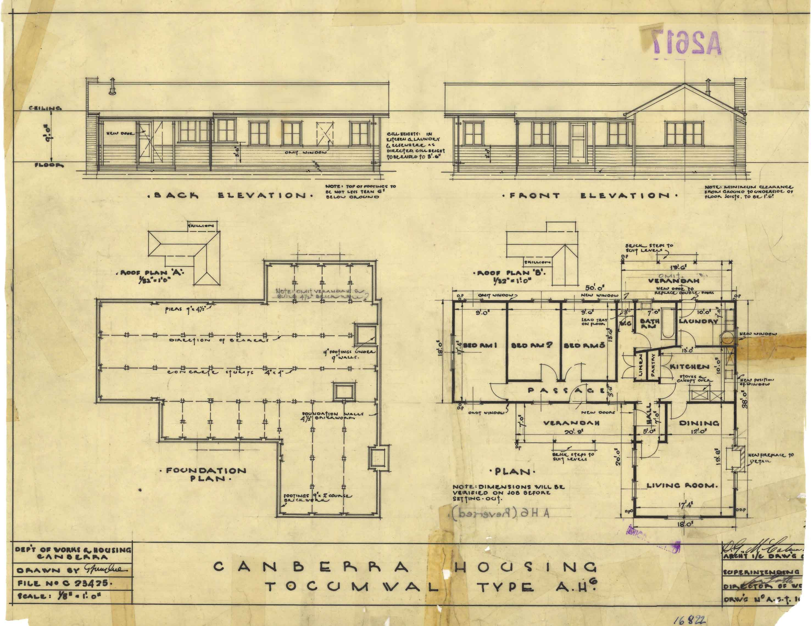
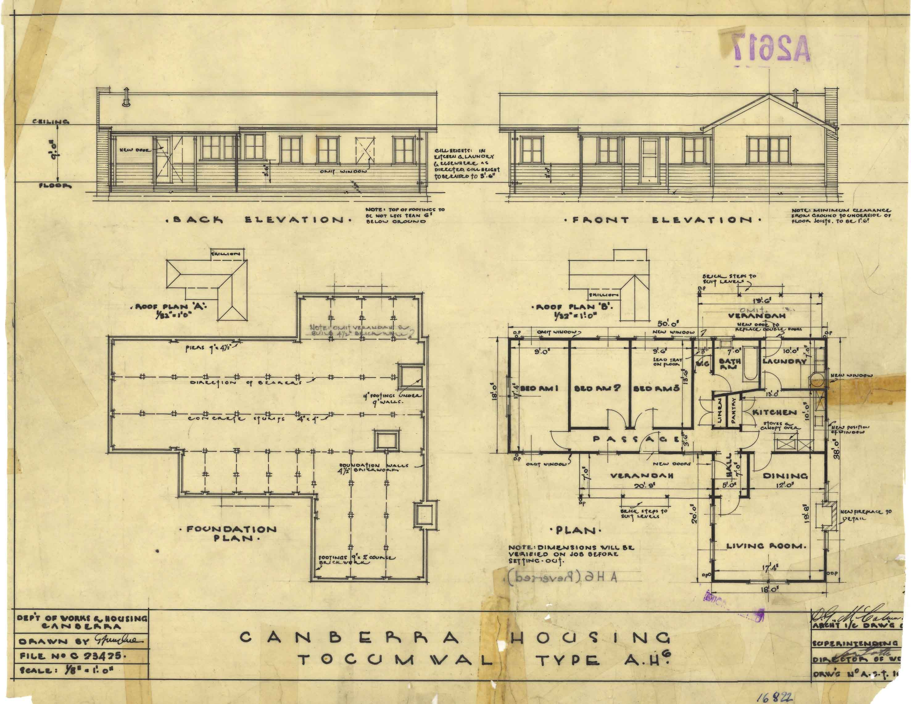
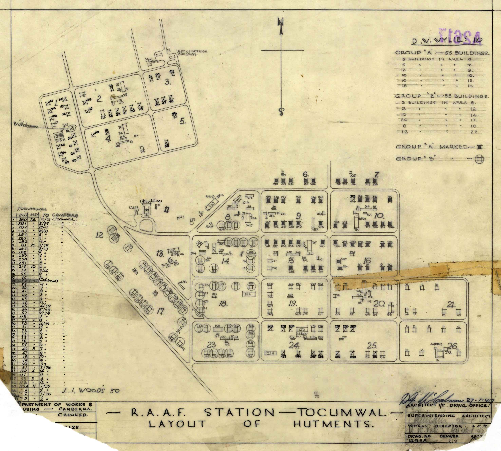
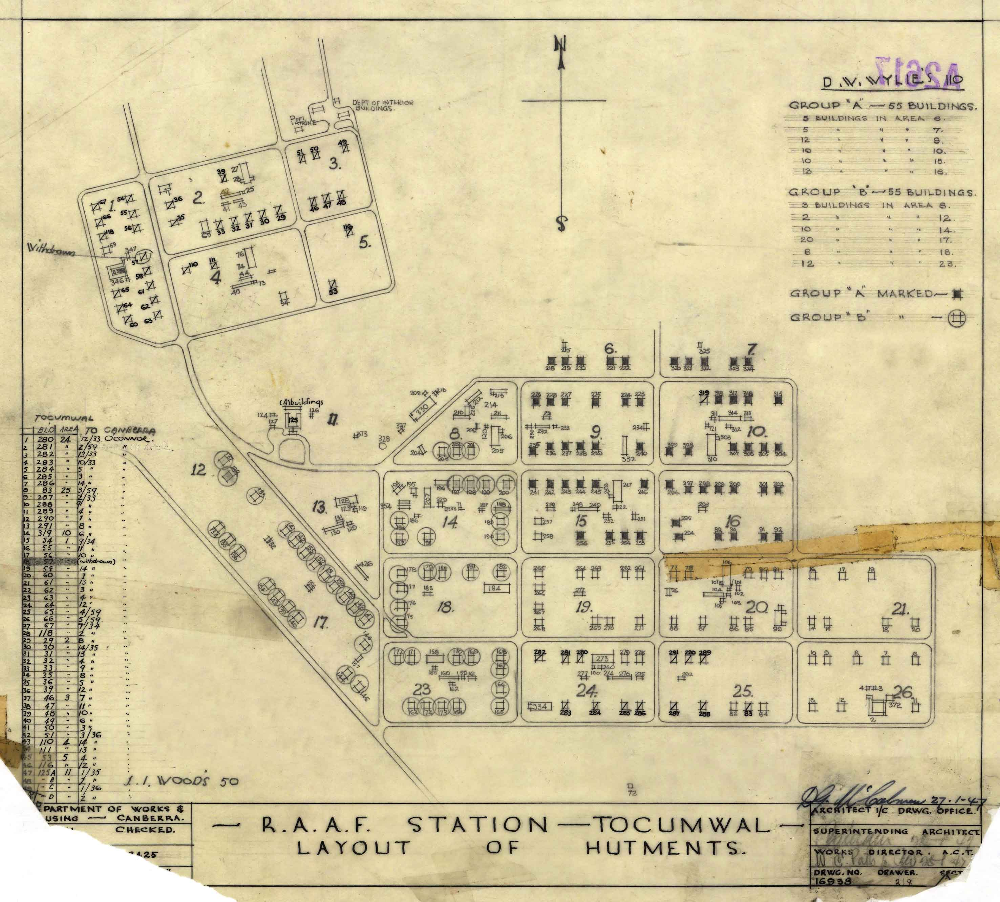

An Introduction to Tocumwal
The Tocumwal Archive

The Tocumwal Archive is a collection of stories and photographs, about living in the houses that were moved from the Tocumwal air force base in New South Wales, to the Canberra suburb of O'Connor. The base was built during the Second World War as an inland defence against Japanese invasion. As camouflage, the sleeping quarters for air force personnel were built in the form of houses. After the War, the acute housing shortage in Canberra gave the houses a new purpose. From the late 1940s, about 200 of them were transported to the growing suburbs of Ainslie and O'Connor. In O'Connor they were located in two groups of four cul-de-sacs meeting at a central park and bounded by Macarthur, Macpherson, Miller and Tate Streets. The area is listed as an Australian Capital Territory (ACT) heritage precinct. Collection for the Archive began in 1996 with a PhotoAccess project supported by the ACT Heritage Council. Stories and photographs are archived according to the donor's name. Ongoing community collection and maintenance of the Archive is encouraged. The Archive is open for research use and the contribution of material at the ACT Heritage Library in the Woden Town Library.
The Origins of Canberaa's Tocumwal houses
After the bombing of Darwin, the United States and Australia made joint plans for Australian inland defence. The Tocumwal airfield was the largest and first of several large airfields planned for construction in relation to the the line of possible Japanese advance. It was built by the Australian Government (Australian Civil Construction Corps and Allied Works Council) on behalf of the United States Army Air Force between February and April 1942. Five thousand people were involved in the construction of the base which was designed to stage bombing raids and reconnaisance flights, as well as take the role of the first training centre in the South-West Pacific for Liberators. Not long after the 'houses' were erected at the end of the building process, the Battle of the Coral Sea halted the Japanese advance and the USAAF decided to move north to Townsville. The Royal Australian air force officially took over the running of Tocumwal in November 1942, establishing it as a hospital and training base.
(Information from Thematic Study: WWII Aerodromes and associated structures in New South Wales, New South Wales Heritage Office, 2000, and military historians Dr Darryl McIntyre and Noel Flanagan)
The Tocumwal air force base
My family was aware of Tocumwal and its houses long before they became a feature of the streets of O'Connor. My father, Hartley Hollier, was a serving member of the RAAF from 1936-46 and was actually stationed at Tocumwal when the 'Tocumwal houses' were in that town, newly-built and functioning as they had been designed to function.
The Tocumwal air force base was part of the 'Brisbane Line' strategy of World War II. The Brisbane Line was, in fact, an imaginary line drawn on a map connecting Perth with Brisbane. This effectively divided Australia into two segments. The thinking was that we could afford to lose everything above the line, if needs be, to an invading Japanese force - but we would fight to the death to keep everything below it. For this reason various air force bases were strategically placed just inside the 'line', and Tocumwal was one of these locations.
What we know as the 'Tocumwal houses' were built in Tocumwal for the purpose of setting up the air force base. The whole base was designed to look like any Australian country town, and was virtually all accommodated in the 'houses'. It had roads and streets laid out and I imagine that the aircraft hangars and workshops might have looked like the local school or public hall. The houses had no partitioning inside and most of them served as sleeping quarters for the men. They had a half-hourly bus service and the bus would pick up personnel and drop them where they needed to go. The vital purpose for designing a base in such a form was that, should enemy surveillance aircraft fly overhead, all that they would see would be an ordinary town.
After the end of World War II the air force base at Tocumwal was no longer needed. I imagine there was at first a feeling of, 'What on earth are we going to do with all this lot?' But, concurrently, Canberra was developing fast by the mid-1940s and someone had the brilliant idea (or so it would seem, with hindsight) of bringing the houses and re-erecting them here. Sylvia Hollier (contributed 1996)

Constructing the Tocumwal air force base
Like many others Stanley Mawston (Bluey) Forster went to join up in 1942. Because of his building qualifications and ability to read plans - blueprints as they were referred to in those days - he was seconded to the Dept of the Interior. His was to be a different kind of war.
Stan arrived in Tocumwal by train with troops and personnel like himself, late one Saturday afternoon. After a twenty two hour train ride to what felt like the ends of the earth all he and his travelling companions could think of was a long cold beer. After spending most of his life on the coast of NSW he found this flat, dry and seemingly barren country a vast contrast to the lush coast that he had been used to.
The men were housed in tents on the 'drome and worked daylight to dark. They were mainly men of the 3Cs - Civil Construction Corps - and Stan was foreman on the cook house and picture theatre as well as the houses.
Initially in Tocumwal for 10-12 weeks, the majority of the men were then sent on to Amberly air force base. After his release from the Dept of the Interior Stan returned to Tocumwal and worked as a builder in the town and district until he accepted the position of caretaker in 1957 at the aerodrome. A small contingent of officers and enlisted men were still stationed there until 1964 and on their departure, Stan moved into a residence on site. At this time all remaining fixtures and buildings on the 'drome were sold or removed.
Stan had bought the house that he and his family moved into in 1964 and spent his spare time renovating it with the view of moving it into town to retire in. After the completion and refit he chose to sell and return to Wollongong and the family home they had left behind twenty seven years before.
Judy Carlon, Tocumwal Historical Society (contributed 1996)
 

 
